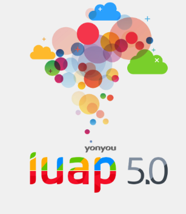

欢迎高树江,
来到iUAP 技术中台。
iUAP 技术中台
iuap5.0技术中台：云原生技术在数字企业的深度实践 对于云原生的概念理解近几年也发生了些变化，归根结底，其代表的是一种思维，代表架构和开发模式，企业要做的是更好地通过云的架构实现对业务的支撑。 iuap5.0技术中台的总体架构和特性相较于以前的版本并没有太多的改变，包括微服务、DevOps、容器云、诊断与运维工具。其中有两大关键的特性，一是云原生技术构建以业务为中心的高可用体系，一是云原生技术让企业服务实现云间穿梭。